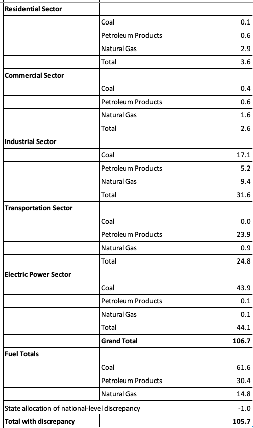
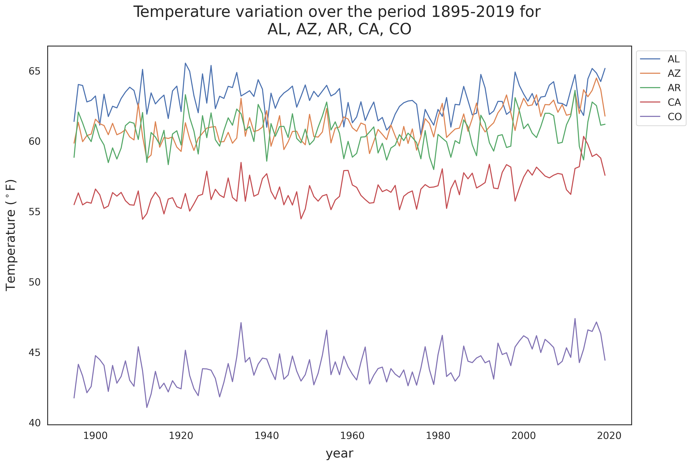
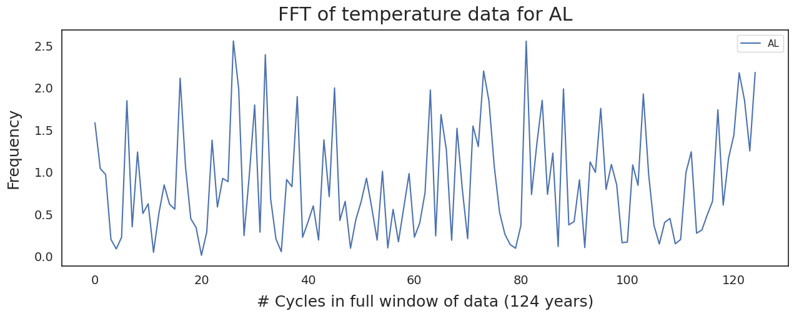
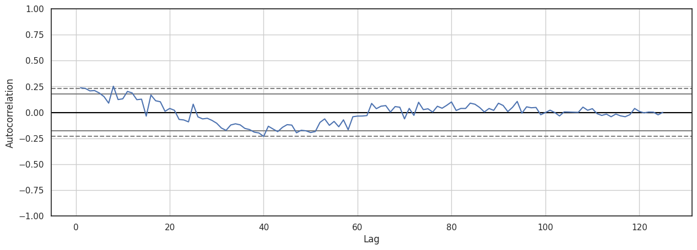

Statistical Analysis of Climate Data Using Time Series
Climate change and global warming are real, observable, and measurable. This project conducts time series analysis using two datasets, Energy-Related CO2 Emission Data Tables from US Energy Information Administration (EIA) and data supporting The Washington Post's series, "2ºC: Beyond the Limit.", to quantify the links between the climate variation and different drivers of change.
As I was exploring different datasets across the web, trying to find a dataset that draws my interest to analyze and potentially gain some insights, I came across the following datasets:
-
- The data supporting the Washington Post's series, 2°C: Beyond the limit, that was awarded the Pulitzer prize for explanatory reporting (link to data). The dataset includes:
fips: A five digit fips code for the countyCTYNAME: the name of the countySTNAME: the name of the stateAnnual: Estimate of annual average temperature change in Celsius for the county, 1895-2019Fall: temperature change in September, October and NovemberSpring: temperature change in March, April and MaySummer: temperature change in June, July and AugustWinter: temperature change in December and the following January and Februarymax_warming_season: the season where temperatures are increasing fastest
-
- Energy-Related CO2 Emission Data Tables from US Energy Information Administration (link to data)
import warnings
import matplotlib
import numpy as np
import pandas as pd
import seaborn as sns
import matplotlib.pyplot as plt
from matplotlib import cm as cm
warnings.filterwarnings('ignore')
from IPython.display import Image
from matplotlib import rc, rcParams
from IPython.core.display import HTML
matplotlib.rcParams['font.family'] = 'serif'
rc('font',**{'family':'serif','serif':['Times']})
rc('text', usetex=False)
rc('text.latex', preamble=r'\usepackage{underscore}')
np.set_printoptions(precision=3)
pd.set_option('display.float_format', lambda x: '%.3f' % x)
import chart_studio.plotly as py
import plotly.graph_objs as go #importing graphical objects
from plotly.offline import download_plotlyjs, init_notebook_mode, plot, iplot
sns.set(rc={"figure.dpi":100})
from bs4 import BeautifulSoup, SoupStrainer
# download_plotlyjs allows plotly to work in offline mode.
# init_notebook_mode connects Javascript to our notebook.
us_states = [
'AL', 'AK', 'AZ', 'AR', 'CA', 'CO', 'CT', 'DE',
'DC', 'FL', 'GA', 'HI', 'ID', 'IL', 'IN', 'IA',
'KS', 'KY', 'LA', 'ME', 'MD', 'MA', 'MI', 'MN',
'MS', 'MO', 'MT', 'NE', 'NV', 'NH', 'NJ', 'NM',
'NY', 'NC', 'ND', 'OH', 'OK', 'OR', 'PA', 'RI',
'SC', 'SD', 'TN', 'TX', 'UT', 'VT', 'VA', 'WA',
'WV', 'WI', 'WY'
]
Data Cleaning
Energy-Related CO2 Emission Data Tables from US Energy Information Administration
pd.read_excel('AL.xlsx').head()
| Alabama Carbon Dioxide Emissions from Fossil Fuel Consumption (1980-2018) | Unnamed: 1 | Unnamed: 2 | Unnamed: 3 | Unnamed: 4 | Unnamed: 5 | Unnamed: 6 | Unnamed: 7 | Unnamed: 8 | Unnamed: 9 | ... | Unnamed: 31 | Unnamed: 32 | Unnamed: 33 | Unnamed: 34 | Unnamed: 35 | Unnamed: 36 | Unnamed: 37 | Unnamed: 38 | Unnamed: 39 | Unnamed: 40 | |
|---|---|---|---|---|---|---|---|---|---|---|---|---|---|---|---|---|---|---|---|---|---|
| 0 | million metric tons of CO2 | NaN | nan | nan | nan | nan | nan | nan | nan | nan | ... | nan | nan | nan | nan | nan | nan | nan | nan | nan | nan |
| 1 | NaN | NaN | nan | nan | nan | nan | nan | nan | nan | nan | ... | nan | nan | nan | nan | nan | nan | nan | nan | nan | nan |
| 2 | NaN | NaN | 1980.000 | 1981.000 | 1982.000 | 1983.000 | 1984.000 | 1985.000 | 1986.000 | 1987.000 | ... | 2009.000 | 2010.000 | 2011.000 | 2012.000 | 2013.000 | 2014.000 | 2015.000 | 2016.000 | 2017.000 | 2018.000 |
| 3 | Residential Sector | NaN | nan | nan | nan | nan | nan | nan | nan | nan | ... | nan | nan | nan | nan | nan | nan | nan | nan | nan | nan |
| 4 | NaN | Coal | 0.110 | 0.037 | 0.048 | 0.049 | 0.063 | 0.063 | 0.069 | 0.073 | ... | 0.000 | 0.000 | 0.000 | 0.000 | 0.000 | 0.000 | 0.000 | 0.000 | 0.000 | 0.000 |
5 rows × 41 columns
# drop the rows wih all nan columns
pd.read_excel('AL.xlsx').dropna(how='all').head()
| Alabama Carbon Dioxide Emissions from Fossil Fuel Consumption (1980-2018) | Unnamed: 1 | Unnamed: 2 | Unnamed: 3 | Unnamed: 4 | Unnamed: 5 | Unnamed: 6 | Unnamed: 7 | Unnamed: 8 | Unnamed: 9 | ... | Unnamed: 31 | Unnamed: 32 | Unnamed: 33 | Unnamed: 34 | Unnamed: 35 | Unnamed: 36 | Unnamed: 37 | Unnamed: 38 | Unnamed: 39 | Unnamed: 40 | |
|---|---|---|---|---|---|---|---|---|---|---|---|---|---|---|---|---|---|---|---|---|---|
| 0 | million metric tons of CO2 | NaN | nan | nan | nan | nan | nan | nan | nan | nan | ... | nan | nan | nan | nan | nan | nan | nan | nan | nan | nan |
| 2 | NaN | NaN | 1980.000 | 1981.000 | 1982.000 | 1983.000 | 1984.000 | 1985.000 | 1986.000 | 1987.000 | ... | 2009.000 | 2010.000 | 2011.000 | 2012.000 | 2013.000 | 2014.000 | 2015.000 | 2016.000 | 2017.000 | 2018.000 |
| 3 | Residential Sector | NaN | nan | nan | nan | nan | nan | nan | nan | nan | ... | nan | nan | nan | nan | nan | nan | nan | nan | nan | nan |
| 4 | NaN | Coal | 0.110 | 0.037 | 0.048 | 0.049 | 0.063 | 0.063 | 0.069 | 0.073 | ... | 0.000 | 0.000 | 0.000 | 0.000 | 0.000 | 0.000 | 0.000 | 0.000 | 0.000 | 0.000 |
| 5 | NaN | Petroleum Products | 0.615 | 0.630 | 0.709 | 0.821 | 0.457 | 0.464 | 0.525 | 0.611 | ... | 0.532 | 0.585 | 0.372 | 0.269 | 0.298 | 0.314 | 0.344 | 0.319 | 0.301 | 0.361 |
5 rows × 41 columns
# start reading from the correct row
pd.read_excel('AL.xlsx', skiprows=3).dropna(how='all').head()
| Unnamed: 0 | Unnamed: 1 | 1980 | 1981 | 1982 | 1983 | 1984 | 1985 | 1986 | 1987 | ... | 2009 | 2010 | 2011 | 2012 | 2013 | 2014 | 2015 | 2016 | 2017 | 2018 | |
|---|---|---|---|---|---|---|---|---|---|---|---|---|---|---|---|---|---|---|---|---|---|
| 0 | Residential Sector | NaN | nan | nan | nan | nan | nan | nan | nan | nan | ... | nan | nan | nan | nan | nan | nan | nan | nan | nan | nan |
| 1 | NaN | Coal | 0.110 | 0.037 | 0.048 | 0.049 | 0.063 | 0.063 | 0.069 | 0.073 | ... | 0.000 | 0.000 | 0.000 | 0.000 | 0.000 | 0.000 | 0.000 | 0.000 | 0.000 | 0.000 |
| 2 | NaN | Petroleum Products | 0.615 | 0.630 | 0.709 | 0.821 | 0.457 | 0.464 | 0.525 | 0.611 | ... | 0.532 | 0.585 | 0.372 | 0.269 | 0.298 | 0.314 | 0.344 | 0.319 | 0.301 | 0.361 |
| 3 | NaN | Natural Gas | 2.870 | 2.757 | 2.620 | 2.658 | 2.769 | 2.406 | 2.455 | 2.689 | ... | 1.965 | 2.275 | 1.973 | 1.487 | 1.890 | 2.114 | 1.786 | 1.547 | 1.437 | 1.892 |
| 4 | NaN | Total | 3.594 | 3.425 | 3.377 | 3.528 | 3.289 | 2.933 | 3.050 | 3.373 | ... | 2.496 | 2.859 | 2.344 | 1.756 | 2.188 | 2.428 | 2.130 | 1.866 | 1.737 | 2.253 |
5 rows × 41 columns
# finally, reset index
pd.read_excel('AL.xlsx', skiprows=3).dropna(how='all').reset_index(drop=True).head()
| Unnamed: 0 | Unnamed: 1 | 1980 | 1981 | 1982 | 1983 | 1984 | 1985 | 1986 | 1987 | ... | 2009 | 2010 | 2011 | 2012 | 2013 | 2014 | 2015 | 2016 | 2017 | 2018 | |
|---|---|---|---|---|---|---|---|---|---|---|---|---|---|---|---|---|---|---|---|---|---|
| 0 | Residential Sector | NaN | nan | nan | nan | nan | nan | nan | nan | nan | ... | nan | nan | nan | nan | nan | nan | nan | nan | nan | nan |
| 1 | NaN | Coal | 0.110 | 0.037 | 0.048 | 0.049 | 0.063 | 0.063 | 0.069 | 0.073 | ... | 0.000 | 0.000 | 0.000 | 0.000 | 0.000 | 0.000 | 0.000 | 0.000 | 0.000 | 0.000 |
| 2 | NaN | Petroleum Products | 0.615 | 0.630 | 0.709 | 0.821 | 0.457 | 0.464 | 0.525 | 0.611 | ... | 0.532 | 0.585 | 0.372 | 0.269 | 0.298 | 0.314 | 0.344 | 0.319 | 0.301 | 0.361 |
| 3 | NaN | Natural Gas | 2.870 | 2.757 | 2.620 | 2.658 | 2.769 | 2.406 | 2.455 | 2.689 | ... | 1.965 | 2.275 | 1.973 | 1.487 | 1.890 | 2.114 | 1.786 | 1.547 | 1.437 | 1.892 |
| 4 | NaN | Total | 3.594 | 3.425 | 3.377 | 3.528 | 3.289 | 2.933 | 3.050 | 3.373 | ... | 2.496 | 2.859 | 2.344 | 1.756 | 2.188 | 2.428 | 2.130 | 1.866 | 1.737 | 2.253 |
5 rows × 41 columns
### drop the last row
df = pd.read_excel('AL.xlsx', skiprows=3).dropna(how='all').reset_index(drop=True)
df.drop(df.index.max(), inplace=True)
df.tail()
| Unnamed: 0 | Unnamed: 1 | 1980 | 1981 | 1982 | 1983 | 1984 | 1985 | 1986 | 1987 | ... | 2009 | 2010 | 2011 | 2012 | 2013 | 2014 | 2015 | 2016 | 2017 | 2018 | |
|---|---|---|---|---|---|---|---|---|---|---|---|---|---|---|---|---|---|---|---|---|---|
| 27 | NaN | Coal | 61.574 | 58.773 | 47.780 | 49.865 | 54.681 | 62.083 | 61.928 | 61.925 | ... | 60.176 | 68.511 | 62.056 | 52.105 | 53.827 | 54.863 | 47.100 | 39.064 | 36.076 | 35.916 |
| 28 | NaN | Petroleum Products | 30.362 | 29.109 | 29.143 | 27.479 | 27.271 | 26.681 | 28.215 | 29.926 | ... | 35.791 | 36.063 | 36.194 | 35.703 | 34.432 | 34.383 | 36.314 | 38.526 | 37.450 | 36.670 |
| 29 | NaN | Natural Gas | 14.771 | 14.911 | 13.449 | 12.203 | 12.715 | 12.086 | 11.154 | 11.387 | ... | 24.739 | 28.884 | 32.327 | 35.940 | 33.207 | 34.517 | 37.224 | 37.937 | 36.144 | 40.902 |
| 30 | State allocation of national-level discrepancy | NaN | -1.024 | -0.646 | -0.174 | -0.268 | -0.048 | -0.248 | -0.093 | 0.242 | ... | 0.537 | 0.300 | 0.175 | 0.418 | 0.059 | -0.009 | -0.007 | -0.176 | -0.269 | -0.136 |
| 31 | Total with discrepancy | NaN | 105.682 | 102.147 | 90.198 | 89.278 | 94.619 | 100.602 | 101.204 | 103.479 | ... | 121.244 | 133.759 | 130.751 | 124.165 | 121.524 | 123.753 | 120.631 | 115.352 | 109.402 | 113.351 |
5 rows × 41 columns
Here's how the first two column of the states excel files look like (once the empty rows are removed):
Image('excel_template.png')

# Step 1- find non null values in the first column
# The words corresponding to the first six non-null
# row indices denote the energy sector
nulls = np.where(df.iloc[:,0].isnull())[0]
notnulls = np.where(df.iloc[:,0].notnull())[0][:-2]
discrepancies = np.where(df.iloc[:,0].notnull())[0][-2:]
notnulls
array([ 0, 5, 10, 15, 20, 26])
df.iloc[notnulls,0]
0 Residential Sector
5 Commercial Sector
10 Industrial Sector
15 Transportation Sector
20 Electric Power Sector
26 Fuel Totals
Name: Unnamed: 0, dtype: object
# and null values; the null indices of first column are
# the indices for the sector-specific co2 sources of the second column
df.iloc[nulls,1]
1 Coal
2 Petroleum Products
3 Natural Gas
4 Total
6 Coal
7 Petroleum Products
8 Natural Gas
9 Total
11 Coal
12 Petroleum Products
13 Natural Gas
14 Total
16 Coal
17 Petroleum Products
18 Natural Gas
19 Total
21 Coal
22 Petroleum Products
23 Natural Gas
24 Total
25 Grand Total
27 Coal
28 Petroleum Products
29 Natural Gas
Name: Unnamed: 1, dtype: object
Our goal is to combine the first two columns to get something like
['residential_sector_coal',
'residential_sector_petroleum_products',
'residential_sector_natural_gas',
'residential_sector_total',
'commercial_sector_coal',
'commercial_sector_petroleum_products',
'commercial_sector_natural_gas',
'commercial_sector_total',
'industrial_sector_coal',
'industrial_sector_petroleum_products',
'industrial_sector_natural_gas',
'industrial_sector_total',
'transportation_sector_coal',
'transportation_sector_petroleum_products',
'transportation_sector_natural_gas',
'transportation_sector_total',
'electric_power_sector_coal',
'electric_power_sector_petroleum_products',
'electric_power_sector_natural_gas',
'electric_power_sector_total',
'electric_power_sector_grand_total',
'fuel_totals_coal',
'fuel_totals_petroleum_products',
'fuel_totals_natural_gas']
We can define a function to facilitate the process for all state execl files.
def clean_co2_df(state_name):
df = pd.read_excel(f'{state_name}.xlsx', skiprows=3).dropna(how='all').reset_index(drop=True)
# drop the last row
df.drop(df.index.max(), inplace=True)
nulls = np.where(df.iloc[:,0].isnull())[0]
notnulls = np.where(df.iloc[:,0].notnull())[0][:-2]
discrepancy_ids = np.where(df.iloc[:,0].notnull())[0][-2:]
fuels = list(df.iloc[nulls, 1])
sectors = list(df.iloc[notnulls,0])
num_sectors = np.diff(np.where(df.iloc[:,0].notnull())[0][:-1])-1
labels = []
for i, num in enumerate(list(num_sectors)):
labels += num*[sectors[i]]
entries = [(labels[i] + '_' + fuels[i]).replace(' ','_').lower() for i in range(len(fuels))]
discrepancies = list(df.iloc[discrepancy_ids, 0].apply(lambda x: '_'.join(x.split()).lower()))
entries.extend(discrepancies)
df.dropna(thresh=2, inplace=True)
df.drop(['Unnamed: 0', 'Unnamed: 1'], axis=1, inplace=True)
colnames = df.columns.tolist()
df['entry'] = entries
df['state'] = [state_name]*len(entries)
new_colnames = ['state','entry']+colnames
return df[new_colnames]
co2_df = clean_co2_df('AL')
co2_df.head()
| state | entry | 1980 | 1981 | 1982 | 1983 | 1984 | 1985 | 1986 | 1987 | ... | 2009 | 2010 | 2011 | 2012 | 2013 | 2014 | 2015 | 2016 | 2017 | 2018 | |
|---|---|---|---|---|---|---|---|---|---|---|---|---|---|---|---|---|---|---|---|---|---|
| 1 | AL | residential_sector_coal | 0.110 | 0.037 | 0.048 | 0.049 | 0.063 | 0.063 | 0.069 | 0.073 | ... | 0.000 | 0.000 | 0.000 | 0.000 | 0.000 | 0.000 | 0.000 | 0.000 | 0.000 | 0.000 |
| 2 | AL | residential_sector_petroleum_products | 0.615 | 0.630 | 0.709 | 0.821 | 0.457 | 0.464 | 0.525 | 0.611 | ... | 0.532 | 0.585 | 0.372 | 0.269 | 0.298 | 0.314 | 0.344 | 0.319 | 0.301 | 0.361 |
| 3 | AL | residential_sector_natural_gas | 2.870 | 2.757 | 2.620 | 2.658 | 2.769 | 2.406 | 2.455 | 2.689 | ... | 1.965 | 2.275 | 1.973 | 1.487 | 1.890 | 2.114 | 1.786 | 1.547 | 1.437 | 1.892 |
| 4 | AL | residential_sector_total | 3.594 | 3.425 | 3.377 | 3.528 | 3.289 | 2.933 | 3.050 | 3.373 | ... | 2.496 | 2.859 | 2.344 | 1.756 | 2.188 | 2.428 | 2.130 | 1.866 | 1.737 | 2.253 |
| 6 | AL | commercial_sector_coal | 0.404 | 0.163 | 0.230 | 0.252 | 0.262 | 0.219 | 0.228 | 0.238 | ... | 0.000 | 0.000 | 0.000 | 0.000 | 0.000 | 0.000 | 0.000 | 0.000 | 0.000 | 0.000 |
5 rows × 41 columns
for state in us_states[1:]:
tmp = clean_co2_df(state)
co2_df=pd.concat([co2_df,tmp])
co2_df.to_pickle('co2_data.pkl')
# co2_df=pd.read_pickle('co2_data.pkl')
The data supporting the Washington Post's series, 2°C: Beyond the limit
WApost_climate_df = pd.read_csv('WApost_climdiv_county_year.csv')
WApost_climate_df.head()
| fips | year | temp | tempc | |
|---|---|---|---|---|
| 0 | 1001 | 1895 | 62.633 | 17.019 |
| 1 | 1001 | 1896 | 65.342 | 18.523 |
| 2 | 1001 | 1897 | 65.150 | 18.417 |
| 3 | 1001 | 1898 | 63.817 | 17.676 |
| 4 | 1001 | 1899 | 63.925 | 17.736 |
WApost_climate_df.describe()
| fips | year | temp | tempc | |
|---|---|---|---|---|
| count | 388375.000 | 388375.000 | 388375.000 | 388375.000 |
| mean | 30665.073 | 1957.000 | 53.996 | 12.220 |
| std | 14979.044 | 36.083 | 8.432 | 4.684 |
| min | 1001.000 | 1895.000 | 30.508 | -0.829 |
| 25% | 19043.000 | 1926.000 | 47.650 | 8.694 |
| 50% | 29211.000 | 1957.000 | 53.908 | 12.171 |
| 75% | 46007.000 | 1988.000 | 60.533 | 15.852 |
| max | 56045.000 | 2019.000 | 78.817 | 26.009 |
WApost_climate_df.isnull().values.any()
False
How to join the Washington Post data and CO2 data?
The co2 emission data is a state-level data that reports the emission rates due to different sources for each state, whereas the Washington Post data that includes the variation of temperatures over the period 1895-2019 is a county-level data where the counties are represented using their Federal Information Processing Standards (FIPS) codes.
We need to find a table that converts these codes to the county/state names before being able to join the two climate dataframes.
## obtaining the fips table from
## https://www.nrcs.usda.gov/wps/portal/nrcs/detail/national/home/?cid=nrcs143_013697
NRCS page has a table including FIPS codes for every county in the US.
We use a relatively straightforward way to convert this table into a useful dictionary in Python. First, we need to get the contents of the html page.
import requests
response = requests.get('https://www.nrcs.usda.gov/wps/portal/nrcs/detail/national/home/?cid=nrcs143_013697')
The most important components of a response to check before moving forward are the status code and the content.
response.status_code
200
We get a response code of 200, meaning that our request was 'Successful'!
response.content[:100]
b'\r\n\r\n\r\n\r\n \r\n \r\n\r\n \r\n\r\n <!DOCTYPE html>\r\n \r\n\r\n \r\n \r\n \r\n \r\n \r\n \r\n \r\n \r\n \r\n'
We can check the response text using BeautifulSoup. BeautifulSoup allows us to find our tag of interest by specifying one of its attributes. By inspecting the table tag in this case we realize that it has and attribute class="data". Furthermore, SoupStrainer method of the bs4 library can be used to limit our search to table tags only.
soup = BeautifulSoup(response.text,'html.parser',parse_only=SoupStrainer('table'))
table = soup.find("table", { "class" : "data" })
print(table.text[:50])
FIPS
Name
State
01001
Autauga
AL
01003
Bald
Looks Ok! Next we want to encapsulate this information into a list() or DataFrame
def get_row_data(tr, column_tag='td'):
return [td.get_text(strip=True) for td in tr.find_all(column_tag)]
rows = []
trs = table.find_all('tr')
headerow = get_row_data(trs[0], 'th')
for tr in trs[1:]: # for every table row
rows.append(get_row_data(tr)) # data row
print(headerow)
['FIPS', 'Name', 'State']
fips_df = pd.DataFrame(rows[1:],columns=['FIPS', 'county', 'state'])
fips_df.head()
| FIPS | county | state | |
|---|---|---|---|
| 0 | 01003 | Baldwin | AL |
| 1 | 01005 | Barbour | AL |
| 2 | 01007 | Bibb | AL |
| 3 | 01009 | Blount | AL |
| 4 | 01011 | Bullock | AL |
We save the dataframe for later use.
fips_df.to_pickle('fips.pkl', protocol=4)
fips_df=pd.read_pickle('fips.pkl')
Merging the Washington Post and FIPS data into a single dataframe
Note that the Washington Post data for FIPS, WApost_climate_df['fips'] has the type int64:
WApost_climate_df['fips'].dtype
dtype('int64')
This will cause issues for the counties that have a leading zero. We convert the type of fips column to str and add the leading zero to those rows that lack it.
WApost_climate_df['FIPS'] = climate_df['fips'].apply(lambda x: '0'+str(x) if x<10000 else str(x))
WApost_climate_df.head()
| fips | year | temp | tempc | FIPS | |
|---|---|---|---|---|---|
| 0 | 1001 | 1895 | 62.633 | 17.019 | 01001 |
| 1 | 1001 | 1896 | 65.342 | 18.523 | 01001 |
| 2 | 1001 | 1897 | 65.150 | 18.417 | 01001 |
| 3 | 1001 | 1898 | 63.817 | 17.676 | 01001 |
| 4 | 1001 | 1899 | 63.925 | 17.736 | 01001 |
Looks good! Next, we merge the WApost_climate_df and fips_df to add the state and county information into one dataframe.
climate_df = \
pd.merge(WApost_climate_df, fips_df, how='left', left_on=['FIPS'], right_on=['FIPS']) \
.dropna() \
.reset_index(drop=True) \
.drop(columns=['fips'])
climate_df.head()
| year | temp | tempc | FIPS | county | state | |
|---|---|---|---|---|---|---|
| 0 | 1895 | 65.533 | 18.630 | 01003 | Baldwin | AL |
| 1 | 1896 | 68.208 | 20.116 | 01003 | Baldwin | AL |
| 2 | 1897 | 68.142 | 20.079 | 01003 | Baldwin | AL |
| 3 | 1898 | 66.467 | 19.148 | 01003 | Baldwin | AL |
| 4 | 1899 | 67.017 | 19.454 | 01003 | Baldwin | AL |
We also change the name of the column temp to tempf for the sake of clarity.
climate_df.rename({'temp': 'tempf'}, axis=1, inplace=True)
climate_df.head()
| year | tempf | tempc | FIPS | county | state | |
|---|---|---|---|---|---|---|
| 0 | 1895 | 65.533 | 18.630 | 01003 | Baldwin | AL |
| 1 | 1896 | 68.208 | 20.116 | 01003 | Baldwin | AL |
| 2 | 1897 | 68.142 | 20.079 | 01003 | Baldwin | AL |
| 3 | 1898 | 66.467 | 19.148 | 01003 | Baldwin | AL |
| 4 | 1899 | 67.017 | 19.454 | 01003 | Baldwin | AL |
np.unique(climate_df['state'])
array(['AL', 'AR', 'AZ', 'CA', 'CO', 'CT', 'DC', 'DE', 'FL', 'GA', 'IA',
'ID', 'IL', 'IN', 'KS', 'KY', 'LA', 'MA', 'MD', 'ME', 'MI', 'MN',
'MO', 'MS', 'MT', 'NC', 'ND', 'NE', 'NH', 'NJ', 'NM', 'NV', 'NY',
'OH', 'OK', 'OR', 'PA', 'RI', 'SC', 'SD', 'TN', 'TX', 'UT', 'VA',
'VT', 'WA', 'WI', 'WV', 'WY'], dtype=object)
len(np.unique(climate_df['state'])), len(us_states)
(49, 51)
print(set(us_states).difference(set(climate_df['state'])))
{'AK', 'HI'}
Note that the information for 'Alaska' and 'Hawaii' are not included in Washington Post data. For the sake of consistency, we remove them from the us_states.
us_states.remove('AK')
us_states.remove('HI')
Sanity check!
print(set(us_states).difference(set(climate_df['state'])))
set()
Lastly, we save the dataframe.
climate_df.to_pickle('climate.pkl')
#climate_df=pd.read_pickle('climate.pkl')
EDA
Temperature variation of different states over time.
sns.set_style('white')
fig, ax = plt.subplots(1, 1, figsize=(15,10), dpi=300)
temp_unit = 'F' # or 'F' for farenheit
states_list = us_states[:5]
for state in states_list:
means = climate_df[climate_df['state']==state] \
.groupby('year') \
.agg({'temp'+temp_unit.lower(): 'mean'})
years = means.index.tolist()
ax.plot(years, means, label=state)
ax.set_xlabel('year', labelpad=10, fontsize=18)
ax.set_ylabel(f'Temperature ($^\circ${temp_unit})', labelpad=15, fontsize=18)
states = ', '.join([state for state in states_list])
ax.set_title(f'Temperature variation over the period {min(years)}-{max(years)} for \n{states}',
fontsize=22, y=1.02)
plt.setp(ax.get_xticklabels(), fontsize=14)
plt.setp(ax.get_yticklabels(), fontsize=14)
ax.legend(bbox_to_anchor=(1, 0, 0.1, 1), loc='upper left', fontsize=14)
plt.show()

Fourier Analysis
import scipy.fft
fig, ax = plt.subplots(1, 1, figsize=(15,5))
state='AL'
means = climate_df[climate_df['state']==state] \
.groupby('year') \
.agg({'tempf': 'mean'})
years = means.index.tolist()
mean = np.average(means)
fft = scipy.fft.fft(means - mean)
ax.plot(np.abs(fft), label='AL')
ax.set_xlabel(f'# Cycles in full window of data ({max(years)-min(years)} years)', fontsize=18, labelpad=10)
ax.set_ylabel('Frequency', fontsize=18, labelpad=15)
ax.set_title(f"FFT of temperature data for {state}", fontsize=22, y=1.02)
plt.setp(ax.get_xticklabels(), fontsize=14)
plt.setp(ax.get_yticklabels(), fontsize=14)
ax.legend();

Autocorrelation function
from pandas.plotting import autocorrelation_plot
# Let's plot a Autocorrelation for Alabama
fig, ax = plt.subplots(1, 1, figsize=(15,5))
means = climate_df[climate_df['state']=='AL'] \
.groupby('year') \
.agg({'tempf': 'mean'})
autocorrelation_plot(means, ax=ax)
ax.set_ylim([-1,1])
(-1.0, 1.0)

states_list = us_states[:20]
print(itertools.chain(states_list))
<itertools.chain object at 0x2ab468700ad0>
#https://ourcodingclub.github.io/tutorials/pandas-time-series/
all_states_df[all_states_df['entry'].str.endswith('_sector_total') |
all_states_df['entry'].str.endswith('_with_discrepancy')].head(7)
| state | entry | 1980 | 1981 | 1982 | 1983 | 1984 | 1985 | 1986 | 1987 | ... | 2009 | 2010 | 2011 | 2012 | 2013 | 2014 | 2015 | 2016 | 2017 | 2018 | |
|---|---|---|---|---|---|---|---|---|---|---|---|---|---|---|---|---|---|---|---|---|---|
| 4 | AL | residential_sector_total | 3.594 | 3.425 | 3.377 | 3.528 | 3.289 | 2.933 | 3.050 | 3.373 | ... | 2.496 | 2.859 | 2.344 | 1.756 | 2.188 | 2.428 | 2.130 | 1.866 | 1.737 | 2.253 |
| 9 | AL | commercial_sector_total | 2.614 | 2.396 | 2.269 | 2.484 | 2.350 | 2.547 | 2.484 | 2.298 | ... | 1.890 | 2.111 | 2.045 | 1.777 | 1.830 | 1.929 | 2.164 | 2.218 | 2.109 | 2.353 |
| 14 | AL | industrial_sector_total | 31.648 | 28.767 | 25.881 | 21.854 | 24.947 | 22.906 | 22.158 | 23.783 | ... | 17.441 | 18.893 | 19.324 | 21.432 | 21.135 | 22.224 | 21.070 | 21.170 | 20.959 | 21.838 |
| 19 | AL | transportation_sector_total | 24.786 | 24.152 | 23.543 | 22.924 | 23.811 | 23.516 | 24.460 | 25.990 | ... | 31.882 | 32.181 | 32.264 | 31.808 | 31.565 | 31.590 | 32.882 | 34.654 | 33.877 | 33.224 |
| 24 | AL | electric_power_sector_total | 44.065 | 44.053 | 35.301 | 38.757 | 40.271 | 48.947 | 49.146 | 47.793 | ... | 66.997 | 77.414 | 74.598 | 66.975 | 64.748 | 65.591 | 62.392 | 55.619 | 50.988 | 53.819 |
| 31 | AL | total_with_discrepancy | 105.682 | 102.147 | 90.198 | 89.278 | 94.619 | 100.602 | 101.204 | 103.479 | ... | 121.244 | 133.759 | 130.751 | 124.165 | 121.524 | 123.753 | 120.631 | 115.352 | 109.402 | 113.351 |
| 4 | AK | residential_sector_total | 0.930 | 0.944 | 1.177 | 1.193 | 1.394 | 1.425 | 1.304 | 1.264 | ... | 1.748 | 1.676 | 1.718 | 1.754 | 1.551 | 1.455 | 1.580 | 1.495 | 1.656 | 1.457 |
7 rows × 41 columns